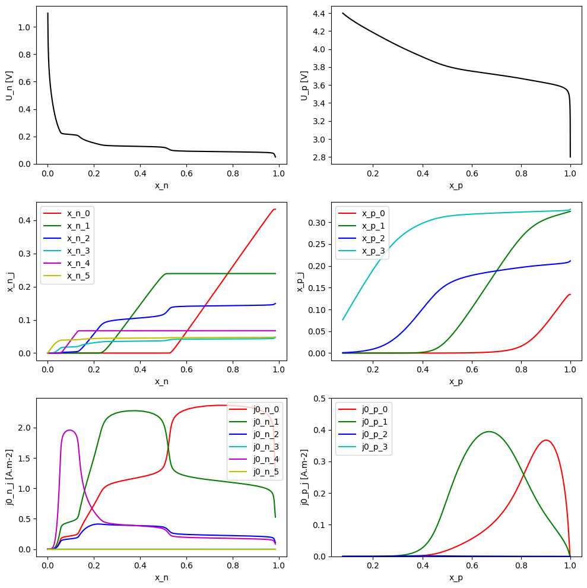
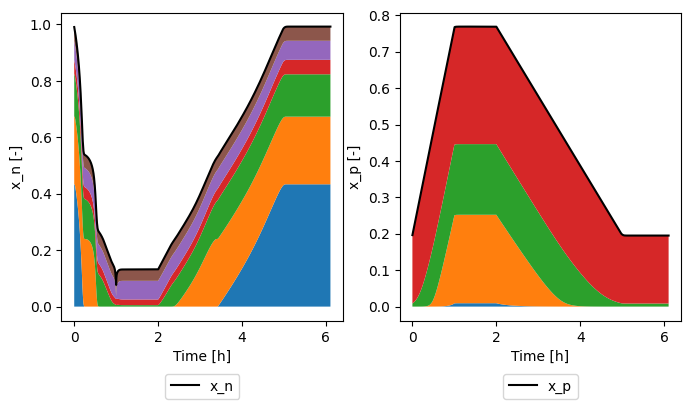

Tip
An interactive online version of this notebook is available, which can be
accessed via

Alternatively, you may download this notebook and run it offline.
Multi-Species Multi-Reaction model#
[1]:
%pip install "pybamm[plot,cite]" -q # install PyBaMM if it is not installed
import matplotlib.pyplot as plt
import pybamm
Note: you may need to restart the kernel to use updated packages.
Model Equations#
Here we briefly outline the models used for the open-circuit potential, kinetics, and solid phase transport used in the MSMR model, as described in Baker and Verbrugge (2018). The remaining physics is modelled differently depending on which options are selected. By default, the rest of the battery model is as described in Maquis et al. (2019). In the following we give equations for a single electrode.
Thermodynamics#
The MSMR model is developed by assuming that all electrochemical reactions at the electrode/electrolyte interface in a lithium insertion cell can be expressed in the form
For each species \(j\), a vacant host site \(\text{H}_{j}\) can accommodate one lithium leading to a filled host site \((\text{Li--H})_{j}\). The OCV for this reaction is written as
where \(f = F/(RT)\), and \(R\), \(T\), and \(F\) are the universal gas constant, temperature in Kelvin, and Faraday’s constant, respectively. Here \(X_j\) represents the total fraction of available host sites which can be occupied by species \(j\), \(x_j\) is the fraction of filled sites occupied by species \(j\), \(U_j^0\) is a concentration independent standard electrode potential, and the \(\omega_j\) is an unitless parameter that describes the level of disorder of the reaction represented by gallery \(j\).
The equation for each reaction can be inverted to give
The overall electrode state of charge is given by summing the fractional occupancies
which is an explicit closed form expression for the inverse of the OCV. This is opposite to many battery models where one typically gives the OCV as an explicit function of the state of charge (or stoichiometry).
At a particle interface with the electrolyte, local equilibrium requires that
Kinetics#
The kinetics of the insertion reaction are given as
where \(i_j\) is the interfacial current associated with reaction \(j\), \(\alpha_j\) is the symmetry factor, \(\eta\) is the overpotential, given by
where \(\phi_s\) and \(\phi_e\) are the solid phase and electrolyte potentials, respectively, and \(i_{0,j}\) is the exchange current density of reaction \(j\), given by
where \(c_e\) is the electrolyte concentration.
Solid phase transport#
Within the MSMR framework, the flux within the particles is expressed in terms of gradient of the chemical potential
where \(N\) is the flux of lithiated sites, \(N_{\text{H}}\) is the flux of unlithiated sites, \(c_{\text{T}}\) is the total concentration of lithiated and delithiated sites, and \(D\) is a diffusion coefficient. Ignoring volumetric expansion during lithiation, the total flux of sites vanishes
It can then be shown that
A mass balance in the solid phase then gives
which, for a radially symmetric spherical particle, must be solved subject to the boundary conditions
where \(R\) is the particle radius. This must be supplemented with a suitable initial condition for the electrode state of charge.
Solution of this problem requires evaluate of the function \(U(x)\) and the derivative \(\text{d}U/\text{d}x\), but these functions cannot be explicitly integrated. This problem can be avoided by replacing the dependent variable \(x\) with a new dependent variable \(U\) subject to the transformation
This gives the following equation for mass balance within the particles
which must be solved along with the transformed boundary and initial conditions.
Parameterization of the MSMR model#
The behaviour of MSMR model is characterised by the parameters:
\(X_j\):
host site occupancy fraction (j)\(U^0_j\):
host site standard potential (j) [V]\(\omega_j\):
host site ideality factor (j)\(\alpha_j\):
host site charge transfer coefficient (j)\(i_{0,j}^{ref}\):
host site reference exchange-current density (j) [A.m-2]
Let’s take a look at their values in the example parameter set provided in PyBaMM. The thermodynamic parameter values are taken from Verbrugge et al. (2017) and correspond to a graphite negative electrode and NMC positive electrode. The remaining value are based on a parameterization of the LG M50 cell, from Chen et al. (2020).
We first load in the MSMR model and specify the number of reactions in each electrode
[2]:
model = pybamm.lithium_ion.MSMR({"number of MSMR reactions": ("6", "4")})
Then we can inspect the parameter values
[3]:
parameter_values = model.default_parameter_values
# Loop over domains
for domain in ["negative", "positive"]:
Electrode = domain.capitalize()
# Loop over reactions
N = int(parameter_values["Number of reactions in " + domain + " electrode"])
for i in range(N):
names = [
f"{Electrode} electrode host site occupancy fraction ({i})",
f"{Electrode} electrode host site standard potential ({i}) [V]",
f"{Electrode} electrode host site ideality factor ({i})",
f"{Electrode} electrode host site charge transfer coefficient ({i})",
f"{Electrode} electrode host site reference exchange-current density ({i}) [A.m-2]",
]
for name in names:
print(f"{name} = {parameter_values[name]}")
Negative electrode host site occupancy fraction (0) = 0.43336
Negative electrode host site standard potential (0) [V] = 0.08843
Negative electrode host site ideality factor (0) = 0.08611
Negative electrode host site charge transfer coefficient (0) = 0.5
Negative electrode host site reference exchange-current density (0) [A.m-2] = 2.7
Negative electrode host site occupancy fraction (1) = 0.23963
Negative electrode host site standard potential (1) [V] = 0.12799
Negative electrode host site ideality factor (1) = 0.08009
Negative electrode host site charge transfer coefficient (1) = 0.5
Negative electrode host site reference exchange-current density (1) [A.m-2] = 2.7
Negative electrode host site occupancy fraction (2) = 0.15018
Negative electrode host site standard potential (2) [V] = 0.14331
Negative electrode host site ideality factor (2) = 0.72469
Negative electrode host site charge transfer coefficient (2) = 0.5
Negative electrode host site reference exchange-current density (2) [A.m-2] = 2.7
Negative electrode host site occupancy fraction (3) = 0.05462
Negative electrode host site standard potential (3) [V] = 0.16984
Negative electrode host site ideality factor (3) = 2.53277
Negative electrode host site charge transfer coefficient (3) = 0.5
Negative electrode host site reference exchange-current density (3) [A.m-2] = 2.7
Negative electrode host site occupancy fraction (4) = 0.06744
Negative electrode host site standard potential (4) [V] = 0.21446
Negative electrode host site ideality factor (4) = 0.0947
Negative electrode host site charge transfer coefficient (4) = 0.5
Negative electrode host site reference exchange-current density (4) [A.m-2] = 2.7
Negative electrode host site occupancy fraction (5) = 0.05476
Negative electrode host site standard potential (5) [V] = 0.36325
Negative electrode host site ideality factor (5) = 5.97354
Negative electrode host site charge transfer coefficient (5) = 0.5
Negative electrode host site reference exchange-current density (5) [A.m-2] = 2.7
Positive electrode host site occupancy fraction (0) = 0.13442
Positive electrode host site standard potential (0) [V] = 3.62274
Positive electrode host site ideality factor (0) = 0.9671
Positive electrode host site charge transfer coefficient (0) = 0.5
Positive electrode host site reference exchange-current density (0) [A.m-2] = 5
Positive electrode host site occupancy fraction (1) = 0.3246
Positive electrode host site standard potential (1) [V] = 3.72645
Positive electrode host site ideality factor (1) = 1.39712
Positive electrode host site charge transfer coefficient (1) = 0.5
Positive electrode host site reference exchange-current density (1) [A.m-2] = 5
Positive electrode host site occupancy fraction (2) = 0.21118
Positive electrode host site standard potential (2) [V] = 3.90575
Positive electrode host site ideality factor (2) = 3.505
Positive electrode host site charge transfer coefficient (2) = 0.5
Positive electrode host site reference exchange-current density (2) [A.m-2] = 5
Positive electrode host site occupancy fraction (3) = 0.3298
Positive electrode host site standard potential (3) [V] = 4.22955
Positive electrode host site ideality factor (3) = 5.52757
Positive electrode host site charge transfer coefficient (3) = 1
Positive electrode host site reference exchange-current density (3) [A.m-2] = 1000000.0
We can plot the functional form of the open-circuit potential \(U\), fractional occupancies \(x_j\), and exchange current densities \(i_{0,j}\) as a function of stoichiometry \(x\)
[4]:
# get symbolic parameters
param = model.param
param_n = param.n.prim
param_p = param.p.prim
num_reactions_n = int(parameter_values["Number of reactions in negative electrode"])
num_reactions_p = int(parameter_values["Number of reactions in positive electrode"])
# set up ranges for plotting
U_n = pybamm.linspace(0.05, 1.1, 1000)
U_p = pybamm.linspace(2.8, 4.4, 1000)
# get reference electrolyte concentration and temperature
c_e = param.c_e_init
T = param.T_init
# set up figure
fig, ax = plt.subplots(3, 2, figsize=(10, 10))
colors = ["r", "g", "b", "c", "m", "y"]
# sto vs potential
x_n = param_n.x(U_n, T)
x_p = param_p.x(U_p, T)
ax[0, 0].plot(parameter_values.evaluate(x_n), parameter_values.evaluate(U_n), "k-")
ax[0, 1].plot(parameter_values.evaluate(x_p), parameter_values.evaluate(U_p), "k-")
ax[0, 0].set_xlabel("x_n")
ax[0, 0].set_ylabel("U_n [V]")
ax[0, 1].set_xlabel("x_p")
ax[0, 1].set_ylabel("U_p [V]")
# fractional occupancy vs potential
for i in range(num_reactions_n):
xj = param_n.x_j(U_n, T, i)
ax[1, 0].plot(
parameter_values.evaluate(x_n),
parameter_values.evaluate(xj),
color=colors[i],
label=f"x_n_{i}",
)
ax[1, 0].set_xlabel("x_n")
ax[1, 0].set_ylabel("x_n_j")
ax[1, 0].legend()
for i in range(num_reactions_p):
xj = param_p.x_j(U_p, T, i)
ax[1, 1].plot(
parameter_values.evaluate(x_p),
parameter_values.evaluate(xj),
color=colors[i],
label=f"x_p_{i}",
)
ax[1, 1].set_xlabel("x_p")
ax[1, 1].set_ylabel("x_p_j")
ax[1, 1].legend()
# exchange current density vs potential
for i in range(num_reactions_n):
xj = param_n.x_j(U_n, T, i)
j0 = param_n.j0_j(c_e, U_n, T, i)
ax[2, 0].plot(
parameter_values.evaluate(x_n),
parameter_values.evaluate(j0),
color=colors[i],
label=f"j0_n_{i}",
)
ax[2, 0].set_xlabel("x_n")
ax[2, 0].set_ylabel("j0_n_j [A.m-2]")
ax[2, 0].legend()
for i in range(num_reactions_p):
xj = param_p.x_j(U_p, T, i)
j0 = param_p.j0_j(c_e, U_p, T, i)
ax[2, 1].plot(
parameter_values.evaluate(x_p),
parameter_values.evaluate(j0),
color=colors[i],
label=f"j0_p_{i}",
)
ax[2, 1].set_ylim([0, 0.5])
ax[2, 1].set_xlabel("x_p")
ax[2, 1].set_ylabel("j0_p_j [A.m-2]")
ax[2, 1].legend()
plt.tight_layout()

Example solving MSMR using PyBaMM#
Below we show how to set up and solve a CCCV experiment using the MSMR model in PyBaMM. We already created the model in the previous section, so we can go ahead and define our experiment, before creating and solving a simulation
[5]:
experiment = pybamm.Experiment(
[
(
"Discharge at 1C for 1 hour or until 3 V",
"Rest for 1 hour",
"Charge at C/3 until 4.2 V",
"Hold at 4.2 V until 10 mA",
"Rest for 1 hour",
),
],
)
sim = pybamm.Simulation(model, experiment=experiment)
sim.solve()
[5]:
<pybamm.solvers.solution.Solution at 0x11f0446e0>
Finally we can plot the results. In the MSMR model we can look at both the potential and stoichiometry as a function of position through the electrode and within the particle
[6]:
sim.plot(
[
"Negative particle stoichiometry",
"Positive particle stoichiometry",
"X-averaged negative electrode open-circuit potential [V]",
"X-averaged positive electrode open-circuit potential [V]",
"Negative particle potential [V]",
"Positive particle potential [V]",
"Current [A]",
"Voltage [V]",
],
variable_limits="tight", # make axes tight to plot at each timestep
)
interactive(children=(FloatSlider(value=0.0, description='t', max=6.1079155173630815, step=0.06107915517363081…
[6]:
<pybamm.plotting.quick_plot.QuickPlot at 0x11f38e150>
We can also look at the individual reactions
[7]:
xns = [
f"Average x_n_{i}" for i in range(num_reactions_n)
] # negative electrode reactions: x_n_0, x_n_1, ..., x_n_5
xps = [
f"Average x_p_{i}" for i in range(num_reactions_p)
] # positive electrode reactions: x_p_0, x_p_1, ..., x_p_3
sim.plot(
[
xns,
xps,
"Current [A]",
"Negative electrode stoichiometry",
"Positive electrode stoichiometry",
"Voltage [V]",
]
)
interactive(children=(FloatSlider(value=0.0, description='t', max=6.1079155173630815, step=0.06107915517363081…
[7]:
<pybamm.plotting.quick_plot.QuickPlot at 0x11f55a600>
and plot how they sum to give the electrode stoichiometry
[8]:
sol = sim.solution
time = sol["Time [h]"].data
fig, ax = plt.subplots(1, 2, figsize=(8, 4))
ax[0].plot(time, sol["Average negative particle stoichiometry"].data, "k-", label="x_n")
bottom = 0
for xn in xns:
top = bottom + sol[xn].data
ax[0].fill_between(time, bottom, top, label=xn[-4:])
bottom = top
ax[0].set_xlabel("Time [h]")
ax[0].set_ylabel("x_n [-]")
ax[0].legend(loc="upper center", bbox_to_anchor=(0.5, -0.15), ncol=3)
ax[1].plot(time, sol["Average positive particle stoichiometry"].data, "k-", label="x_p")
bottom = 0
for xp in xps:
top = bottom + sol[xp].data
ax[1].fill_between(time, bottom, top, label=xp[-4:])
bottom = top
ax[1].set_xlabel("Time [h]")
ax[1].set_ylabel("x_p [-]")
ax[1].legend(loc="upper center", bbox_to_anchor=(0.5, -0.15), ncol=3)
[8]:
<matplotlib.legend.Legend at 0x12dc95e80>

References#
The relevant papers for this notebook are:
[9]:
pybamm.print_citations()
[1] Joel A. E. Andersson, Joris Gillis, Greg Horn, James B. Rawlings, and Moritz Diehl. CasADi – A software framework for nonlinear optimization and optimal control. Mathematical Programming Computation, 11(1):1–36, 2019. doi:10.1007/s12532-018-0139-4.
[2] Daniel R Baker and Mark W Verbrugge. Multi-species, multi-reaction model for porous intercalation electrodes: part i. model formulation and a perturbation solution for low-scan-rate, linear-sweep voltammetry of a spinel lithium manganese oxide electrode. Journal of The Electrochemical Society, 165(16):A3952, 2018.
[3] Von DAG Bruggeman. Berechnung verschiedener physikalischer konstanten von heterogenen substanzen. i. dielektrizitätskonstanten und leitfähigkeiten der mischkörper aus isotropen substanzen. Annalen der physik, 416(7):636–664, 1935.
[4] Chang-Hui Chen, Ferran Brosa Planella, Kieran O'Regan, Dominika Gastol, W. Dhammika Widanage, and Emma Kendrick. Development of Experimental Techniques for Parameterization of Multi-scale Lithium-ion Battery Models. Journal of The Electrochemical Society, 167(8):080534, 2020. doi:10.1149/1945-7111/ab9050.
[5] Marc Doyle, Thomas F. Fuller, and John Newman. Modeling of galvanostatic charge and discharge of the lithium/polymer/insertion cell. Journal of the Electrochemical society, 140(6):1526–1533, 1993. doi:10.1149/1.2221597.
[6] Charles R. Harris, K. Jarrod Millman, Stéfan J. van der Walt, Ralf Gommers, Pauli Virtanen, David Cournapeau, Eric Wieser, Julian Taylor, Sebastian Berg, Nathaniel J. Smith, and others. Array programming with NumPy. Nature, 585(7825):357–362, 2020. doi:10.1038/s41586-020-2649-2.
[7] Alan C. Hindmarsh. The PVODE and IDA algorithms. Technical Report, Lawrence Livermore National Lab., CA (US), 2000. doi:10.2172/802599.
[8] Alan C. Hindmarsh, Peter N. Brown, Keith E. Grant, Steven L. Lee, Radu Serban, Dan E. Shumaker, and Carol S. Woodward. SUNDIALS: Suite of nonlinear and differential/algebraic equation solvers. ACM Transactions on Mathematical Software (TOMS), 31(3):363–396, 2005. doi:10.1145/1089014.1089020.
[9] Valentin Sulzer, Scott G. Marquis, Robert Timms, Martin Robinson, and S. Jon Chapman. Python Battery Mathematical Modelling (PyBaMM). Journal of Open Research Software, 9(1):14, 2021. doi:10.5334/jors.309.
[10] Mark Verbrugge, Daniel Baker, Brian Koch, Xingcheng Xiao, and Wentian Gu. Thermodynamic model for substitutional materials: application to lithiated graphite, spinel manganese oxide, iron phosphate, and layered nickel-manganese-cobalt oxide. Journal of The Electrochemical Society, 164(11):E3243, 2017.